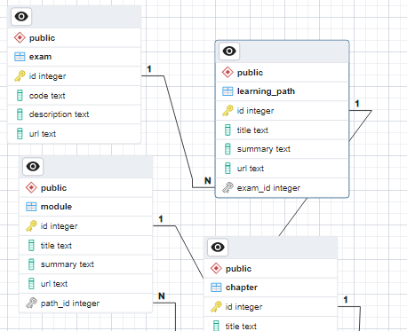

import os
import time
from dotenv import load_dotenv
from urllib.request import Request, urlopen
from bs4 import BeautifulSoup as bsOverview
Retrieval Augmented Generation (RAG) provides Large Language Models (LLMs) context and access to a knowledge base, leading to more precise answers and fewer hallucinations.
In this blog series we’ll go in a journey with RAG and Microsoft Learning Paths (Power BI) to explore what could be achieved.
First up, let’s tackle the data preparation phase.
In Part 1 we’ll ditch the idea of starting with a set of pre-processed documents and instead build our own data pipeline from scratch. This involves creating a database model, scraping Microsoft Modules, storing them in Supabase (PostgreSQL), and managing the database using SQLAlchemy Object Relational Mapper (ORM).
Don’t worry if some of these terms are new; you’re not alone!”
References
Import libraries
from sqlalchemy import create_engine
from sqlalchemy.orm import Session
from typing import List, Tuple, Dict
from typing import Optional
from sqlalchemy import ForeignKey
from sqlalchemy import String
from sqlalchemy.orm import DeclarativeBase
from sqlalchemy.orm import Mapped
from sqlalchemy.orm import mapped_column
from sqlalchemy.orm import relationshipfrom sqlalchemy import Text, BooleanCredentials
load_dotenv()
supabase_host = os.environ.get('SUPABASE_HOST')
supabase_pass = os.environ.get('SUPABASE_PASS')Data Model’s Entity Relationship Diagram (ERD)
Imagine we’re building a roadmap to guide someone’s journey towards becoming a Microsoft Certified: Power BI Data Analyst Associate.
The recommended path involves completing a series of Learning Paths, each filled with Modules containing Chapters. Some Chapters might have Knowledge Checks to assess your understanding, consisting of single-selection Questions with multiple Answers, only one of which is correct.
To represent this structure, let’s create a model that looks like this:

Fig 1. Model’s ERD. (Created with https://dbdiagram.io/)
Creating the Object Relational Mapping
Let’s now move from the diagram to the database itself with SQLAlchemy. We can use the free version of Supabase.
DB_CONNECTION = f'postgresql://postgres:{supabase_pass}@{supabase_host}:5432/postgres'
engine = create_engine(DB_CONNECTION, echo=False)class Base(DeclarativeBase):
pass
class Exam(Base):
__tablename__ = "exam"
id: Mapped[int] = mapped_column(primary_key=True)
code: Mapped[str] = mapped_column(Text())
description: Mapped[str] = mapped_column(Text())
url: Mapped[str] = mapped_column(Text())
learning_paths: Mapped[List["LearningPath"]] = relationship(
back_populates="exam", cascade="all, delete-orphan"
)
def __repr__(self) -> str:
return f"Exam(code={self.code!r}, description={self.description!r}, url={self.url!r})"
class LearningPath(Base):
__tablename__ = "learning_path"
id: Mapped[int] = mapped_column(primary_key=True)
title: Mapped[str] = mapped_column(Text())
summary: Mapped[str] = mapped_column(Text())
url: Mapped[str] = mapped_column(Text())
exam_id: Mapped[int] = mapped_column(ForeignKey("exam.id"))
exam: Mapped["Exam"] = relationship(back_populates="learning_paths")
modules: Mapped[List["Module"]] = relationship(
back_populates="learning_path", cascade="all, delete-orphan"
)
def __repr__(self) -> str:
return f"LearningPath(title={self.title!r}, url={self.url!r})"
class Module(Base):
__tablename__ = "module"
id: Mapped[int] = mapped_column(primary_key=True)
title: Mapped[str] = mapped_column(Text())
summary: Mapped[str] = mapped_column(Text())
url: Mapped[str] = mapped_column(Text())
path_id: Mapped[int] = mapped_column(ForeignKey("learning_path.id"))
learning_path: Mapped["LearningPath"] = relationship(back_populates="modules")
chapters: Mapped[List["Chapter"]] = relationship(
back_populates="module", cascade="all, delete-orphan"
)
def __repr__(self) -> str:
return f"Module(title={self.title!r}, url={self.url!r})"
class Chapter(Base):
__tablename__ = "chapter"
id: Mapped[int] = mapped_column(primary_key=True)
title: Mapped[str] = mapped_column(Text())
content: Mapped[str] = mapped_column(Text())
url: Mapped[str] = mapped_column(Text())
is_check: Mapped[str] = mapped_column(Boolean())
module_id: Mapped[int] = mapped_column(ForeignKey("module.id"))
module: Mapped["Module"] = relationship(back_populates="chapters")
questions: Mapped[List["Question"]] = relationship(
back_populates="chapter", cascade="all, delete-orphan"
)
def __repr__(self) -> str:
return f"Chapter(title={self.title!r}, url={self.url!r})"
class Question(Base):
__tablename__ = "question"
id: Mapped[int] = mapped_column(primary_key=True)
question: Mapped[str] = mapped_column(Text())
chapter_id: Mapped[int] = mapped_column(ForeignKey("chapter.id"))
chapter: Mapped["Chapter"] = relationship(back_populates="questions")
answers: Mapped[List["Answer"]] = relationship(
back_populates="question", cascade="all, delete-orphan"
)
def __repr__(self) -> str:
return f"Question(question={self.question!r})"
class Answer(Base):
__tablename__ = "answer"
id: Mapped[int] = mapped_column(primary_key=True)
answer: Mapped[str] = mapped_column(Text())
is_correct: Mapped[str] = mapped_column(Boolean())
question_id: Mapped[int] = mapped_column(ForeignKey("question.id"))
question: Mapped["Question"] = relationship(back_populates="answers")
def __repr__(self) -> str:
return f"Answer(answer={self.answer!r}, is_correct={self.is_correct!r})"# Delete all table if they exists
Base.metadata.drop_all(engine)# Create all tables
Base.metadata.create_all(engine)After executing the previous command, the tables are created in the database:

Fig 2. Model’s ERD. (Created with pgAdmin)
Start Populating the Database
We’ll use Python to extract the contents of each web page, but we’ll manually grab the exam and Learning Paths links. Our case is Exam PL-300: Microsoft Power BI Data Analyst.
power_bi_exam = Exam(
code='PL-300', description='Microsoft Power BI Data Analyst',
url='https://learn.microsoft.com/en-us/credentials/certifications/power-bi-data-analyst-associate/')power_bi_examExam(code='PL-300', description='Microsoft Power BI Data Analyst', url='https://learn.microsoft.com/en-us/credentials/certifications/power-bi-data-analyst-associate/')with Session(engine) as session:
session.add_all([power_bi_exam])
session.commit()Web Scraping
Since I couldn’t find a direct way to scrape the main page listing all Learning Paths, let’s start with a list of Learning Paths and work our way from there.
from llama_index import SummaryIndex, SimpleWebPageReader
import relearning_path_path = [
"data-analytics-microsoft/", "prepare-data-power-bi/",
"model-data-power-bi/", "build-power-bi-visuals-reports/",
"manage-workspaces-datasets-power-bi/"
]
learning_path_base_url = "https://learn.microsoft.com/en-us/training/paths/"
module_base_url = "https://learn.microsoft.com/en-us/training/modules/"
learning_path_url = [learning_path_base_url + path for path in learning_path_path]learning_path_url['https://learn.microsoft.com/en-us/training/paths/data-analytics-microsoft/',
'https://learn.microsoft.com/en-us/training/paths/prepare-data-power-bi/',
'https://learn.microsoft.com/en-us/training/paths/model-data-power-bi/',
'https://learn.microsoft.com/en-us/training/paths/build-power-bi-visuals-reports/',
'https://learn.microsoft.com/en-us/training/paths/manage-workspaces-datasets-power-bi/']Functions
def get_text_between_regex(text:str, regex:str=r"\n\n\[ (.*?)\/\)\n\n") -> List[str]:
"""Matches and extracts text using regular expressions."""
matches = re.findall(regex, text)
if matches:
return matches
else:
return None
def get_text_from_urls(urls:List[str], delay:int=5) -> List[str]:
"""Scrapes a list of URLs, introducing pauses, using `SimpleWebPageReader`."""
output = []
for url in urls:
print(f'Scraping {url}')
txt = SimpleWebPageReader(html_to_text=True).load_data([url])[0].text
output.append(txt)
time.sleep(delay)
return output
def extract_modules_from_lp(lp_raw_content:List[str]) -> Dict:
"""Extracts modules' names and paths from Learning Path's scraped content."""
modules = {'title': [], 'path': []}
for raw_text in lp_raw_content:
text = raw_text.replace("\n", "").replace("[ !", "[!")
paths = get_text_between_regex(text, MOD_URL_REG)
names = get_text_between_regex(text, MOD_NAME_REG)
names = [
n.strip() for n in names if 'Download' not in n and
'More info' not in n and n != '']
paths = list(dict.fromkeys(paths))
modules['title'].append(names)
modules['path'].append(paths)
return modules
def extract_chapters_from_mods(mod_content:List[List[str]]) -> Dict:
"""Extracts chapters' names and paths from Modules' scraped content."""
chapters = {'title': [], 'path': []}
for lp_mods in mod_content:
for content in lp_mods:
chapters_txt = get_text_between_regex(content.replace("\n", ""), CHAPTERS_REG)[0]
titles = get_text_between_regex(chapters_txt, CHAPTER_TITLE_REG)
titles = [t.strip() for t in titles]
paths = get_text_between_regex(chapters_txt, CHAPTER_PATH_REG)
paths = [p.strip() for p in paths]
chapters['title'].append(titles)
chapters['path'].append(paths)
return chapters
def get_soup(url:str) -> 'bs4.BeautifulSoup':
"""Fetches the HTML content from a URL and parses it using BeautifulSoup."""
req = Request(url)
response = urlopen(req, timeout=10)
soup = bs(response.read())
return soup
def get_questions(soup:'bs4.BeautifulSoup') -> List[str]:
"""Extracts questions from a BeautifulSoup object representing the HTML content."""
questions = []
for q in (
soup
.find_all(class_="field")[0]
.find_all(class_="margin-top-sm margin-bottom-xs field-label")
):
questions += q.select('p')[0].contents
return questions
def get_answers(soup:'bs4.BeautifulSoup') -> List[List]:
"""Extracts answers from a BeautifulSoup object representing the HTML content."""
all_answers = []
for answrs in (
soup
.find_all(class_="field")[0]
.find_all(class_="field-body")
):
answers = []
for answr in (
answrs.find_all(class_="margin-inline-sm radio-label-text")
):
answers += answr.select('p')[0].contents
all_answers.append(answers)
return all_answersGetting Data from each Learning Path
lp_raw_content = get_text_from_urls(learning_path_url, 5)Scraping https://learn.microsoft.com/en-us/training/paths/data-analytics-microsoft/
Scraping https://learn.microsoft.com/en-us/training/paths/prepare-data-power-bi/
Scraping https://learn.microsoft.com/en-us/training/paths/model-data-power-bi/
Scraping https://learn.microsoft.com/en-us/training/paths/build-power-bi-visuals-reports/
Scraping https://learn.microsoft.com/en-us/training/paths/manage-workspaces-datasets-power-bi/Title of each Learning Path
LP_NAME_REG = r"\n# (.*?)\n\n"
lp_title = [get_text_between_regex(txt, LP_NAME_REG)[0] for txt in lp_raw_content]
lp_title['Get started with Microsoft data analytics',
'Prepare data for analysis with Power BI',
'Model data with Power BI',
'Build Power BI visuals and reports',
'Manage workspaces and datasets in Power BI']Description of each Learning Path
LP_DESC_REG = r"\n\nPower BI\n\n([\s\S]*?)\n\n"
lp_desc = [get_text_between_regex(txt, LP_DESC_REG)[0] for txt in lp_raw_content]print(f"- {lp_desc[0][:50]}...")
print(f"- {lp_desc[1][:50]}...")
print(f"- {lp_desc[2][:50]}...")
print(f"- {lp_desc[3][:50]}...")
print(f"- {lp_desc[4][:50]}...")- Businesses need data analysis more than ever. In t...
- You'll learn how to use Power Query to extract dat...
- Learn what a Power BI semantic model is, which dat...
- Turn data into interactive, actionable insights wi...
- In this Learning Path, you'll learn how to publish...[len(des) for des in lp_desc][446, 219, 147, 90, 325]Insert Learning Path Data into Supabase
lp_to_postgres = [
LearningPath(
exam_id=1, title=title,
summary=summary, url=url
) for title, summary, url in zip(lp_title, lp_desc, learning_path_url)
]
lp_to_postgres[0]LearningPath(title='Get started with Microsoft data analytics', url='https://learn.microsoft.com/en-us/training/paths/data-analytics-microsoft/')print(f"id: {lp_to_postgres[0].id}")
print(f"exam_id: {lp_to_postgres[0].exam_id}")
print(f"title: {lp_to_postgres[0].title}")
print(f"summary: {lp_to_postgres[0].summary[:50]}...")id: None
exam_id: 1
title: Get started with Microsoft data analytics
summary: Businesses need data analysis more than ever. In t...with Session(engine) as session:
session.add_all(lp_to_postgres)
session.commit()
lp_desc_id = [lp.id for lp in lp_to_postgres]lp_desc_id[1, 2, 3, 4, 5]Getting Modules’ Paths and Titles
MOD_URL_REG = r"\(.*?/modules/(.*?)\)"
MOD_NAME_REG = r"\[ (.*?)\]"
modules = extract_modules_from_lp(lp_raw_content)modules['title'][0]['Discover data analysis', 'Get started building with Power BI']modules['path'][0]['data-analytics-microsoft/', 'get-started-with-power-bi/']module_base_url
modules['url'] = [[module_base_url + p for p in path] for path in modules['path']]
modules['url'][0]['https://learn.microsoft.com/en-us/training/modules/data-analytics-microsoft/',
'https://learn.microsoft.com/en-us/training/modules/get-started-with-power-bi/']Scraping Data from each Module
modules['content'] = []
for modules_url in modules['url']:
modules['content'].append(get_text_from_urls(modules_url, 5))Scraping https://learn.microsoft.com/en-us/training/modules/data-analytics-microsoft/
Scraping https://learn.microsoft.com/en-us/training/modules/get-started-with-power-bi/
Scraping https://learn.microsoft.com/en-us/training/modules/get-data/
Scraping https://learn.microsoft.com/en-us/training/modules/clean-data-power-bi/
Scraping https://learn.microsoft.com/en-us/training/modules/dax-power-bi-models/
Scraping https://learn.microsoft.com/en-us/training/modules/choose-power-bi-model-framework/
Scraping https://learn.microsoft.com/en-us/training/modules/design-model-power-bi/
Scraping https://learn.microsoft.com/en-us/training/modules/dax-power-bi-write-formulas/
Scraping https://learn.microsoft.com/en-us/training/modules/dax-power-bi-add-measures/
Scraping https://learn.microsoft.com/en-us/training/modules/dax-power-bi-add-calculated-tables/
Scraping https://learn.microsoft.com/en-us/training/modules/dax-power-bi-time-intelligence/
Scraping https://learn.microsoft.com/en-us/training/modules/optimize-model-power-bi/
Scraping https://learn.microsoft.com/en-us/training/modules/enforce-power-bi-model-security/
Scraping https://learn.microsoft.com/en-us/training/modules/power-bi-effective-requirements/
Scraping https://learn.microsoft.com/en-us/training/modules/power-bi-effective-reports/
Scraping https://learn.microsoft.com/en-us/training/modules/power-bi-effective-filters/
Scraping https://learn.microsoft.com/en-us/training/modules/power-bi-effective-user-experience/
Scraping https://learn.microsoft.com/en-us/training/modules/perform-analytics-power-bi/
Scraping https://learn.microsoft.com/en-us/training/modules/create-paginated-reports-power-bi/
Scraping https://learn.microsoft.com/en-us/training/modules/create-manage-workspaces-power-bi/
Scraping https://learn.microsoft.com/en-us/training/modules/manage-datasets-power-bi/
Scraping https://learn.microsoft.com/en-us/training/modules/create-dashboards-power-bi/
Scraping https://learn.microsoft.com/en-us/training/modules/row-level-security-power-bi/modules['content'][3][0][600:1000]'sign requirements\n\n * * Module \n * 8 Units \n\nFeedback\n\nIntermediate\n\nBusiness User\n\nBusiness Analyst\n\nMicrosoft Power Platform\n\nPower BI\n\nGathering appropriate inputs to scope your report design requirements involves\nidentifying your audience, determining the suitable report types, and defining\ntheir interface and experience requirements. This module provides you with a\nstrong foundation on wh'm_d_r_1 = r"\n\nPower BI\n\nMicrosoft Power Platform\n\n"
m_d_r_2 = r"\n\nMicrosoft Power Platform\n\nPower BI\n\n"
m_d_r_3 = r"\n\nPower BI\n\n"
m_d_r_4 = r"\n\nMicrosoft Power Platform\n\n"
MOD_DESC_REG = fr"({m_d_r_1}|{m_d_r_2}|{m_d_r_3}|{m_d_r_4})([\s\S]*?)\n\nSave"modules['summary'] = []
for mod_content in modules['content']:
summary = []
for txt in mod_content:
summary.append(get_text_between_regex(txt, MOD_DESC_REG)[0][1])
modules['summary'].append(summary)print(modules['summary'][3][0])Gathering appropriate inputs to scope your report design requirements involves
identifying your audience, determining the suitable report types, and defining
their interface and experience requirements. This module provides you with a
strong foundation on which to learn how to plan your report design
requirements.
## Learning objectives
In this module, you will:
* Determine business goals.
* Identify your audience.
* Determine report types.
* Define user interface requirements.
* Define user experience requirements.Insert Module Data into Supabase
mod_to_postgres = []
for idx, path_id in enumerate(lp_desc_id):
for title, summary, url in zip(
modules['title'][idx], modules['summary'][idx], modules['url'][idx]
):
mod_to_postgres.append(
Module(
path_id=path_id, title=title,
summary=summary, url=url
)
)with Session(engine) as session:
session.add_all(mod_to_postgres)
session.commit()
mod_id = [mod.id for mod in mod_to_postgres]print(mod_id)[1, 2, 3, 4, 5, 6, 7, 8, 9, 10, 11, 12, 13, 14, 15, 16, 17, 18, 19, 20, 21, 22, 23]Getting Chapter’s Data from each Module
CHAPTERS_REG = r"\* (\[.*) minTheme"
CHAPTER_TITLE_REG = r"\[(.*?)\]"
CHAPTER_PATH_REG = r"]\((.*?)\)"
chapters = extract_chapters_from_mods(modules['content'])len(chapters['title'])23base_url = [base for lp_url in modules['url'] for base in lp_url]
chapters['url'] = []
for base, paths in zip(base_url, chapters['path']):
urls = [base + p for p in paths]
chapters['url'].append(urls)chapters['url'][20]['https://learn.microsoft.com/en-us/training/modules/manage-datasets-power-bi/1-introduction',
'https://learn.microsoft.com/en-us/training/modules/manage-datasets-power-bi/4-power-bi-gateway',
'https://learn.microsoft.com/en-us/training/modules/manage-datasets-power-bi/5-dataset-refresh',
'https://learn.microsoft.com/en-us/training/modules/manage-datasets-power-bi/6-incremental-refresh',
'https://learn.microsoft.com/en-us/training/modules/manage-datasets-power-bi/7-manage-datasets',
'https://learn.microsoft.com/en-us/training/modules/manage-datasets-power-bi/8-troubleshoot-connectivity',
'https://learn.microsoft.com/en-us/training/modules/manage-datasets-power-bi/9-query-caching',
'https://learn.microsoft.com/en-us/training/modules/manage-datasets-power-bi/10-check',
'https://learn.microsoft.com/en-us/training/modules/manage-datasets-power-bi/11-summary']chapters['content'] = []
CHAPTERS_CONTENT_REG = r"minute[s]?\n\n([\s\S]*)\n\n\[ Continue"
for chapters_url in chapters['url']:
raw_content = get_text_from_urls(chapters_url, 8)
chapter_content = []
for txt in raw_content:
chapter_content.append(
get_text_between_regex(txt, CHAPTERS_CONTENT_REG)[0])
chapters['content'].append(chapter_content)Scraping https://learn.microsoft.com/en-us/training/modules/data-analytics-microsoft/1-introduction
Scraping https://learn.microsoft.com/en-us/training/modules/data-analytics-microsoft/2-data-analysis
Scraping https://learn.microsoft.com/en-us/training/modules/data-analytics-microsoft/3-roles
Scraping https://learn.microsoft.com/en-us/training/modules/data-analytics-microsoft/4-tasks
Scraping https://learn.microsoft.com/en-us/training/modules/data-analytics-microsoft/5-check
Scraping https://learn.microsoft.com/en-us/training/modules/data-analytics-microsoft/6-summary
Scraping https://learn.microsoft.com/en-us/training/modules/get-started-with-power-bi/1-introduction
Scraping https://learn.microsoft.com/en-us/training/modules/get-started-with-power-bi/2-using-power-bi
Scraping https://learn.microsoft.com/en-us/training/modules/get-started-with-power-bi/3-building-blocks-of-power-bi
Scraping https://learn.microsoft.com/en-us/training/modules/get-started-with-power-bi/4-exercise-touring-and-using-power-bi
Scraping https://learn.microsoft.com/en-us/training/modules/get-started-with-power-bi/6-get-started-with-power-bi-quiz
Scraping https://learn.microsoft.com/en-us/training/modules/get-started-with-power-bi/5-summary-cleanup
Scraping https://learn.microsoft.com/en-us/training/modules/get-data/1-introduction
Scraping https://learn.microsoft.com/en-us/training/modules/get-data/2-data-files
Scraping https://learn.microsoft.com/en-us/training/modules/get-data/3-relational-data
Scraping https://learn.microsoft.com/en-us/training/modules/get-data/3b-parameters
Scraping https://learn.microsoft.com/en-us/training/modules/get-data/4-nosql-database
Scraping https://learn.microsoft.com/en-us/training/modules/get-data/5-online-services
Scraping https://learn.microsoft.com/en-us/training/modules/get-data/6-storage-mode
Scraping https://learn.microsoft.com/en-us/training/modules/get-data/7-azure-analysis-services
Scraping https://learn.microsoft.com/en-us/training/modules/get-data/8-performance-issues
Scraping https://learn.microsoft.com/en-us/training/modules/get-data/9-import-errors
Scraping https://learn.microsoft.com/en-us/training/modules/get-data/lab-prepare
Scraping https://learn.microsoft.com/en-us/training/modules/get-data/10-check
Scraping https://learn.microsoft.com/en-us/training/modules/get-data/11-summary
Scraping https://learn.microsoft.com/en-us/training/modules/clean-data-power-bi/1-introduction
Scraping https://learn.microsoft.com/en-us/training/modules/clean-data-power-bi/2-shape-data
Scraping https://learn.microsoft.com/en-us/training/modules/clean-data-power-bi/3-data-structure
Scraping https://learn.microsoft.com/en-us/training/modules/clean-data-power-bi/4-column-data-types
Scraping https://learn.microsoft.com/en-us/training/modules/clean-data-power-bi/5-combine-tables
Scraping https://learn.microsoft.com/en-us/training/modules/clean-data-power-bi/6-profile-data
Scraping https://learn.microsoft.com/en-us/training/modules/clean-data-power-bi/7-advanced-editor
Scraping https://learn.microsoft.com/en-us/training/modules/clean-data-power-bi/8-lab
Scraping https://learn.microsoft.com/en-us/training/modules/clean-data-power-bi/9-check
Scraping https://learn.microsoft.com/en-us/training/modules/clean-data-power-bi/10-summary
Scraping https://learn.microsoft.com/en-us/training/modules/dax-power-bi-models/1-introduction
Scraping https://learn.microsoft.com/en-us/training/modules/dax-power-bi-models/2-star-schema-design
Scraping https://learn.microsoft.com/en-us/training/modules/dax-power-bi-models/3-analytic-queries
Scraping https://learn.microsoft.com/en-us/training/modules/dax-power-bi-models/4-report-visuals
Scraping https://learn.microsoft.com/en-us/training/modules/dax-power-bi-models/5-check
Scraping https://learn.microsoft.com/en-us/training/modules/dax-power-bi-models/6-summary
Scraping https://learn.microsoft.com/en-us/training/modules/choose-power-bi-model-framework/1-introduction
Scraping https://learn.microsoft.com/en-us/training/modules/choose-power-bi-model-framework/2-describe-power-bi-model-fundamentals
Scraping https://learn.microsoft.com/en-us/training/modules/choose-power-bi-model-framework/3-determine-when-to-develop-import-model
Scraping https://learn.microsoft.com/en-us/training/modules/choose-power-bi-model-framework/4-determine-when-to-develop-directquery-model
Scraping https://learn.microsoft.com/en-us/training/modules/choose-power-bi-model-framework/5-determine-when-to-develop-composite-model
Scraping https://learn.microsoft.com/en-us/training/modules/choose-power-bi-model-framework/6-choose-model-framework
Scraping https://learn.microsoft.com/en-us/training/modules/choose-power-bi-model-framework/7-knowledge-check
Scraping https://learn.microsoft.com/en-us/training/modules/choose-power-bi-model-framework/8-summary
Scraping https://learn.microsoft.com/en-us/training/modules/design-model-power-bi/1-introduction
Scraping https://learn.microsoft.com/en-us/training/modules/design-model-power-bi/2-tables
Scraping https://learn.microsoft.com/en-us/training/modules/design-model-power-bi/3-date-table
Scraping https://learn.microsoft.com/en-us/training/modules/design-model-power-bi/4-dimensions
Scraping https://learn.microsoft.com/en-us/training/modules/design-model-power-bi/5-data-granularity
Scraping https://learn.microsoft.com/en-us/training/modules/design-model-power-bi/6-relationships-cardinality
Scraping https://learn.microsoft.com/en-us/training/modules/design-model-power-bi/7-modeling-challenges
Scraping https://learn.microsoft.com/en-us/training/modules/design-model-power-bi/8-lab
Scraping https://learn.microsoft.com/en-us/training/modules/design-model-power-bi/10-check
Scraping https://learn.microsoft.com/en-us/training/modules/design-model-power-bi/11-summary
Scraping https://learn.microsoft.com/en-us/training/modules/dax-power-bi-write-formulas/1-introduction
Scraping https://learn.microsoft.com/en-us/training/modules/dax-power-bi-write-formulas/2-formulas
Scraping https://learn.microsoft.com/en-us/training/modules/dax-power-bi-write-formulas/3-data-types
Scraping https://learn.microsoft.com/en-us/training/modules/dax-power-bi-write-formulas/4-functions
Scraping https://learn.microsoft.com/en-us/training/modules/dax-power-bi-write-formulas/5-operators
Scraping https://learn.microsoft.com/en-us/training/modules/dax-power-bi-write-formulas/6-variables
Scraping https://learn.microsoft.com/en-us/training/modules/dax-power-bi-write-formulas/7-check
Scraping https://learn.microsoft.com/en-us/training/modules/dax-power-bi-write-formulas/8-summary
Scraping https://learn.microsoft.com/en-us/training/modules/dax-power-bi-add-measures/1-introduction
Scraping https://learn.microsoft.com/en-us/training/modules/dax-power-bi-add-measures/2-simple-measures
Scraping https://learn.microsoft.com/en-us/training/modules/dax-power-bi-add-measures/3-compound-measures
Scraping https://learn.microsoft.com/en-us/training/modules/dax-power-bi-add-measures/4-quick-measures
Scraping https://learn.microsoft.com/en-us/training/modules/dax-power-bi-add-measures/5-compare-calculated-columns-measures
Scraping https://learn.microsoft.com/en-us/training/modules/dax-power-bi-add-measures/6-check
Scraping https://learn.microsoft.com/en-us/training/modules/dax-power-bi-add-measures/5b-lab
Scraping https://learn.microsoft.com/en-us/training/modules/dax-power-bi-add-measures/7-summary
Scraping https://learn.microsoft.com/en-us/training/modules/dax-power-bi-add-calculated-tables/1-introduction
Scraping https://learn.microsoft.com/en-us/training/modules/dax-power-bi-add-calculated-tables/2-calculated-columns
Scraping https://learn.microsoft.com/en-us/training/modules/dax-power-bi-add-calculated-tables/3-row-context
Scraping https://learn.microsoft.com/en-us/training/modules/dax-power-bi-add-calculated-tables/4-technique
Scraping https://learn.microsoft.com/en-us/training/modules/dax-power-bi-add-calculated-tables/5-check
Scraping https://learn.microsoft.com/en-us/training/modules/dax-power-bi-add-calculated-tables/6-summary
Scraping https://learn.microsoft.com/en-us/training/modules/dax-power-bi-time-intelligence/1-introduction
Scraping https://learn.microsoft.com/en-us/training/modules/dax-power-bi-time-intelligence/2-functions
Scraping https://learn.microsoft.com/en-us/training/modules/dax-power-bi-time-intelligence/3-calculations
Scraping https://learn.microsoft.com/en-us/training/modules/dax-power-bi-time-intelligence/3b-lab
Scraping https://learn.microsoft.com/en-us/training/modules/dax-power-bi-time-intelligence/4-check
Scraping https://learn.microsoft.com/en-us/training/modules/dax-power-bi-time-intelligence/5-summary
Scraping https://learn.microsoft.com/en-us/training/modules/optimize-model-power-bi/1-introduction
Scraping https://learn.microsoft.com/en-us/training/modules/optimize-model-power-bi/2-performance
Scraping https://learn.microsoft.com/en-us/training/modules/optimize-model-power-bi/3-variables
Scraping https://learn.microsoft.com/en-us/training/modules/optimize-model-power-bi/4-reduce-cardinality
Scraping https://learn.microsoft.com/en-us/training/modules/optimize-model-power-bi/5-directquery-models
Scraping https://learn.microsoft.com/en-us/training/modules/optimize-model-power-bi/6-aggregations
Scraping https://learn.microsoft.com/en-us/training/modules/optimize-model-power-bi/7-check
Scraping https://learn.microsoft.com/en-us/training/modules/optimize-model-power-bi/8-summary
Scraping https://learn.microsoft.com/en-us/training/modules/enforce-power-bi-model-security/1-introduction
Scraping https://learn.microsoft.com/en-us/training/modules/enforce-power-bi-model-security/2-restrict-access-to-power-bi-model-data
Scraping https://learn.microsoft.com/en-us/training/modules/enforce-power-bi-model-security/3-restrict-access-to-power-bi-model-objects
Scraping https://learn.microsoft.com/en-us/training/modules/enforce-power-bi-model-security/4-apply-good-modeling-practices
Scraping https://learn.microsoft.com/en-us/training/modules/enforce-power-bi-model-security/4a-exercise-enforce-model-security
Scraping https://learn.microsoft.com/en-us/training/modules/enforce-power-bi-model-security/5-knowledge-check
Scraping https://learn.microsoft.com/en-us/training/modules/enforce-power-bi-model-security/6-summary
Scraping https://learn.microsoft.com/en-us/training/modules/power-bi-effective-requirements/1-introduction
Scraping https://learn.microsoft.com/en-us/training/modules/power-bi-effective-requirements/2-identify
Scraping https://learn.microsoft.com/en-us/training/modules/power-bi-effective-requirements/3-determine
Scraping https://learn.microsoft.com/en-us/training/modules/power-bi-effective-requirements/4-define-interface
Scraping https://learn.microsoft.com/en-us/training/modules/power-bi-effective-requirements/5-define-experience
Scraping https://learn.microsoft.com/en-us/training/modules/power-bi-effective-requirements/6-explore-designs
Scraping https://learn.microsoft.com/en-us/training/modules/power-bi-effective-requirements/7-check
Scraping https://learn.microsoft.com/en-us/training/modules/power-bi-effective-requirements/8-summary
Scraping https://learn.microsoft.com/en-us/training/modules/power-bi-effective-reports/1-introduction
Scraping https://learn.microsoft.com/en-us/training/modules/power-bi-effective-reports/2-design-layout
Scraping https://learn.microsoft.com/en-us/training/modules/power-bi-effective-reports/3-design-reports
Scraping https://learn.microsoft.com/en-us/training/modules/power-bi-effective-reports/4-report-objects
Scraping https://learn.microsoft.com/en-us/training/modules/power-bi-effective-reports/5-report-visuals
Scraping https://learn.microsoft.com/en-us/training/modules/power-bi-effective-reports/6-visuals-layout
Scraping https://learn.microsoft.com/en-us/training/modules/power-bi-effective-reports/7-format
Scraping https://learn.microsoft.com/en-us/training/modules/power-bi-effective-reports/8-kpi
Scraping https://learn.microsoft.com/en-us/training/modules/power-bi-effective-reports/9-lab
Scraping https://learn.microsoft.com/en-us/training/modules/power-bi-effective-reports/10-check
Scraping https://learn.microsoft.com/en-us/training/modules/power-bi-effective-reports/11-summary
Scraping https://learn.microsoft.com/en-us/training/modules/power-bi-effective-filters/1-introduction
Scraping https://learn.microsoft.com/en-us/training/modules/power-bi-effective-filters/2-report-structure
Scraping https://learn.microsoft.com/en-us/training/modules/power-bi-effective-filters/3-slicers
Scraping https://learn.microsoft.com/en-us/training/modules/power-bi-effective-filters/4-advanced-filtering
Scraping https://learn.microsoft.com/en-us/training/modules/power-bi-effective-filters/5-consumption-time
Scraping https://learn.microsoft.com/en-us/training/modules/power-bi-effective-filters/6-filter-techniques
Scraping https://learn.microsoft.com/en-us/training/modules/power-bi-effective-filters/7-feedback-configuration
Scraping https://learn.microsoft.com/en-us/training/modules/power-bi-effective-filters/8-check
Scraping https://learn.microsoft.com/en-us/training/modules/power-bi-effective-filters/9-summary
Scraping https://learn.microsoft.com/en-us/training/modules/power-bi-effective-user-experience/1-introduction
Scraping https://learn.microsoft.com/en-us/training/modules/power-bi-effective-user-experience/2-design-reports
Scraping https://learn.microsoft.com/en-us/training/modules/power-bi-effective-user-experience/3-design-app-reports
Scraping https://learn.microsoft.com/en-us/training/modules/power-bi-effective-user-experience/4-bookmarks
Scraping https://learn.microsoft.com/en-us/training/modules/power-bi-effective-user-experience/5-design-navigation-reports
Scraping https://learn.microsoft.com/en-us/training/modules/power-bi-effective-user-experience/6-visual-headers
Scraping https://learn.microsoft.com/en-us/training/modules/power-bi-effective-user-experience/7-design-built-in-assistance
Scraping https://learn.microsoft.com/en-us/training/modules/power-bi-effective-user-experience/8-tune-reports
Scraping https://learn.microsoft.com/en-us/training/modules/power-bi-effective-user-experience/9-reports-mobile
Scraping https://learn.microsoft.com/en-us/training/modules/power-bi-effective-user-experience/10-lab
Scraping https://learn.microsoft.com/en-us/training/modules/power-bi-effective-user-experience/11-check
Scraping https://learn.microsoft.com/en-us/training/modules/power-bi-effective-user-experience/12-summary
Scraping https://learn.microsoft.com/en-us/training/modules/perform-analytics-power-bi/1-introduction
Scraping https://learn.microsoft.com/en-us/training/modules/perform-analytics-power-bi/2-statistical-summary
Scraping https://learn.microsoft.com/en-us/training/modules/perform-analytics-power-bi/3-visuals
Scraping https://learn.microsoft.com/en-us/training/modules/perform-analytics-power-bi/4-group-data
Scraping https://learn.microsoft.com/en-us/training/modules/perform-analytics-power-bi/5-clustering-techniques
Scraping https://learn.microsoft.com/en-us/training/modules/perform-analytics-power-bi/6-time-series-analysis
Scraping https://learn.microsoft.com/en-us/training/modules/perform-analytics-power-bi/7-analyze-feature
Scraping https://learn.microsoft.com/en-us/training/modules/perform-analytics-power-bi/8-what-if-parameters
Scraping https://learn.microsoft.com/en-us/training/modules/perform-analytics-power-bi/9-use-specialized-visuals
Scraping https://learn.microsoft.com/en-us/training/modules/perform-analytics-power-bi/10-lab
Scraping https://learn.microsoft.com/en-us/training/modules/perform-analytics-power-bi/11-check
Scraping https://learn.microsoft.com/en-us/training/modules/perform-analytics-power-bi/12-summary
Scraping https://learn.microsoft.com/en-us/training/modules/create-paginated-reports-power-bi/1-introduction
Scraping https://learn.microsoft.com/en-us/training/modules/create-paginated-reports-power-bi/2-get-data
Scraping https://learn.microsoft.com/en-us/training/modules/create-paginated-reports-power-bi/3-paginated-report
Scraping https://learn.microsoft.com/en-us/training/modules/create-paginated-reports-power-bi/4-charts
Scraping https://learn.microsoft.com/en-us/training/modules/create-paginated-reports-power-bi/5-publish
Scraping https://learn.microsoft.com/en-us/training/modules/create-paginated-reports-power-bi/7-check
Scraping https://learn.microsoft.com/en-us/training/modules/create-paginated-reports-power-bi/8-summary
Scraping https://learn.microsoft.com/en-us/training/modules/create-manage-workspaces-power-bi/1-introduction
Scraping https://learn.microsoft.com/en-us/training/modules/create-manage-workspaces-power-bi/2-distribute-report-dashboard
Scraping https://learn.microsoft.com/en-us/training/modules/create-manage-workspaces-power-bi/3-monitor-usage-performance
Scraping https://learn.microsoft.com/en-us/training/modules/create-manage-workspaces-power-bi/4-development-lifecycle-strategy
Scraping https://learn.microsoft.com/en-us/training/modules/create-manage-workspaces-power-bi/5-troubleshoot-data
Scraping https://learn.microsoft.com/en-us/training/modules/create-manage-workspaces-power-bi/6-data-protection
Scraping https://learn.microsoft.com/en-us/training/modules/create-manage-workspaces-power-bi/8-check
Scraping https://learn.microsoft.com/en-us/training/modules/create-manage-workspaces-power-bi/9-summary
Scraping https://learn.microsoft.com/en-us/training/modules/manage-datasets-power-bi/1-introduction
Scraping https://learn.microsoft.com/en-us/training/modules/manage-datasets-power-bi/4-power-bi-gateway
Scraping https://learn.microsoft.com/en-us/training/modules/manage-datasets-power-bi/5-dataset-refresh
Scraping https://learn.microsoft.com/en-us/training/modules/manage-datasets-power-bi/6-incremental-refresh
Scraping https://learn.microsoft.com/en-us/training/modules/manage-datasets-power-bi/7-manage-datasets
Scraping https://learn.microsoft.com/en-us/training/modules/manage-datasets-power-bi/8-troubleshoot-connectivity
Scraping https://learn.microsoft.com/en-us/training/modules/manage-datasets-power-bi/9-query-caching
Scraping https://learn.microsoft.com/en-us/training/modules/manage-datasets-power-bi/10-check
Scraping https://learn.microsoft.com/en-us/training/modules/manage-datasets-power-bi/11-summary
Scraping https://learn.microsoft.com/en-us/training/modules/create-dashboards-power-bi/1-introduction
Scraping https://learn.microsoft.com/en-us/training/modules/create-dashboards-power-bi/2-data-alerts
Scraping https://learn.microsoft.com/en-us/training/modules/create-dashboards-power-bi/3-explore-data
Scraping https://learn.microsoft.com/en-us/training/modules/create-dashboards-power-bi/4-quick-insights
Scraping https://learn.microsoft.com/en-us/training/modules/create-dashboards-power-bi/5-dashboard-theme
Scraping https://learn.microsoft.com/en-us/training/modules/create-dashboards-power-bi/6-pin-live-report
Scraping https://learn.microsoft.com/en-us/training/modules/create-dashboards-power-bi/7-configure-real-time-dashboard
Scraping https://learn.microsoft.com/en-us/training/modules/create-dashboards-power-bi/8-configure-data-classification
Scraping https://learn.microsoft.com/en-us/training/modules/create-dashboards-power-bi/9-set-mobile-view
Scraping https://learn.microsoft.com/en-us/training/modules/create-dashboards-power-bi/10-lab
Scraping https://learn.microsoft.com/en-us/training/modules/create-dashboards-power-bi/11-check
Scraping https://learn.microsoft.com/en-us/training/modules/create-dashboards-power-bi/12-summary
Scraping https://learn.microsoft.com/en-us/training/modules/row-level-security-power-bi/1-introduction
Scraping https://learn.microsoft.com/en-us/training/modules/row-level-security-power-bi/2-static-method
Scraping https://learn.microsoft.com/en-us/training/modules/row-level-security-power-bi/3-dynamic-method
Scraping https://learn.microsoft.com/en-us/training/modules/row-level-security-power-bi/lab
Scraping https://learn.microsoft.com/en-us/training/modules/row-level-security-power-bi/4-check
Scraping https://learn.microsoft.com/en-us/training/modules/row-level-security-power-bi/5-summaryInsert Chapter Data into Supabase
ch_to_postgres = []
for idx, m_id in enumerate(mod_id):
for title, content, url in zip(
chapters['title'][idx], chapters['content'][idx], chapters['url'][idx]
):
is_check = False
if 'check' in url or 'quiz' in url:
is_check = True
ch_to_postgres.append(
Chapter(
module_id=m_id, title=title,
content=content, url=url, is_check=is_check
)
)print(len(ch_to_postgres))
ch_to_postgres[0]196Chapter(title='Introduction', url='https://learn.microsoft.com/en-us/training/modules/data-analytics-microsoft/1-introduction')with Session(engine) as session:
session.add_all(ch_to_postgres)
session.commit()
chapter_id = [ch.id for ch in ch_to_postgres]len(chapter_id)196Getting Questions from ‘Check Knowledge’ Chapters
check_chapter = []
for chapter in ch_to_postgres:
if chapter.is_check:
check_chapter.append(chapter)check_chapter[0].url'https://learn.microsoft.com/en-us/training/modules/data-analytics-microsoft/5-check'questions = []
for ch in check_chapter:
print(f"Questions from {ch.url}")
soup = get_soup(ch.url)
questions.append(get_questions(soup))
time.sleep(5)Questions from https://learn.microsoft.com/en-us/training/modules/data-analytics-microsoft/5-check
Questions from https://learn.microsoft.com/en-us/training/modules/get-started-with-power-bi/6-get-started-with-power-bi-quiz
Questions from https://learn.microsoft.com/en-us/training/modules/get-data/10-check
Questions from https://learn.microsoft.com/en-us/training/modules/clean-data-power-bi/9-check
Questions from https://learn.microsoft.com/en-us/training/modules/dax-power-bi-models/5-check
Questions from https://learn.microsoft.com/en-us/training/modules/choose-power-bi-model-framework/7-knowledge-check
Questions from https://learn.microsoft.com/en-us/training/modules/design-model-power-bi/10-check
Questions from https://learn.microsoft.com/en-us/training/modules/dax-power-bi-write-formulas/7-check
Questions from https://learn.microsoft.com/en-us/training/modules/dax-power-bi-add-measures/6-check
Questions from https://learn.microsoft.com/en-us/training/modules/dax-power-bi-add-calculated-tables/5-check
Questions from https://learn.microsoft.com/en-us/training/modules/dax-power-bi-time-intelligence/4-check
Questions from https://learn.microsoft.com/en-us/training/modules/optimize-model-power-bi/7-check
Questions from https://learn.microsoft.com/en-us/training/modules/enforce-power-bi-model-security/5-knowledge-check
Questions from https://learn.microsoft.com/en-us/training/modules/power-bi-effective-requirements/7-check
Questions from https://learn.microsoft.com/en-us/training/modules/power-bi-effective-reports/10-check
Questions from https://learn.microsoft.com/en-us/training/modules/power-bi-effective-filters/8-check
Questions from https://learn.microsoft.com/en-us/training/modules/power-bi-effective-user-experience/11-check
Questions from https://learn.microsoft.com/en-us/training/modules/perform-analytics-power-bi/11-check
Questions from https://learn.microsoft.com/en-us/training/modules/create-paginated-reports-power-bi/7-check
Questions from https://learn.microsoft.com/en-us/training/modules/create-manage-workspaces-power-bi/8-check
Questions from https://learn.microsoft.com/en-us/training/modules/manage-datasets-power-bi/10-check
Questions from https://learn.microsoft.com/en-us/training/modules/create-dashboards-power-bi/11-check
Questions from https://learn.microsoft.com/en-us/training/modules/row-level-security-power-bi/4-checkquestions[0]['Which data role enables advanced analytics capabilities specifically through reports and visualizations?',
'Which data analyst task has a critical performance impact on reporting and data analysis?',
'Which one of the following options is the most important key benefit of data analysis?']Insert Questions into Supabase
q_to_postgres = []
for qs, chapter in zip(questions, check_chapter):
for q in qs:
q_to_postgres.append(
Question(chapter_id=chapter.id, question=q)
)q_to_postgres[0]Question(question='Which data role enables advanced analytics capabilities specifically through reports and visualizations?')with Session(engine) as session:
session.add_all(q_to_postgres)
session.commit()
question_id = [q.id for q in q_to_postgres]len(question_id)69Getting Answers from ‘Check Knowledge’ Chapters
answers = []
for ch in check_chapter:
print(f"Answers from {ch.url}")
soup = get_soup(ch.url)
answers += get_answers(soup)
time.sleep(5)Answers from https://learn.microsoft.com/en-us/training/modules/data-analytics-microsoft/5-check
Answers from https://learn.microsoft.com/en-us/training/modules/get-started-with-power-bi/6-get-started-with-power-bi-quiz
Answers from https://learn.microsoft.com/en-us/training/modules/get-data/10-check
Answers from https://learn.microsoft.com/en-us/training/modules/clean-data-power-bi/9-check
Answers from https://learn.microsoft.com/en-us/training/modules/dax-power-bi-models/5-check
Answers from https://learn.microsoft.com/en-us/training/modules/choose-power-bi-model-framework/7-knowledge-check
Answers from https://learn.microsoft.com/en-us/training/modules/design-model-power-bi/10-check
Answers from https://learn.microsoft.com/en-us/training/modules/dax-power-bi-write-formulas/7-check
Answers from https://learn.microsoft.com/en-us/training/modules/dax-power-bi-add-measures/6-check
Answers from https://learn.microsoft.com/en-us/training/modules/dax-power-bi-add-calculated-tables/5-check
Answers from https://learn.microsoft.com/en-us/training/modules/dax-power-bi-time-intelligence/4-check
Answers from https://learn.microsoft.com/en-us/training/modules/optimize-model-power-bi/7-check
Answers from https://learn.microsoft.com/en-us/training/modules/enforce-power-bi-model-security/5-knowledge-check
Answers from https://learn.microsoft.com/en-us/training/modules/power-bi-effective-requirements/7-check
Answers from https://learn.microsoft.com/en-us/training/modules/power-bi-effective-reports/10-check
Answers from https://learn.microsoft.com/en-us/training/modules/power-bi-effective-filters/8-check
Answers from https://learn.microsoft.com/en-us/training/modules/power-bi-effective-user-experience/11-check
Answers from https://learn.microsoft.com/en-us/training/modules/perform-analytics-power-bi/11-check
Answers from https://learn.microsoft.com/en-us/training/modules/create-paginated-reports-power-bi/7-check
Answers from https://learn.microsoft.com/en-us/training/modules/create-manage-workspaces-power-bi/8-check
Answers from https://learn.microsoft.com/en-us/training/modules/manage-datasets-power-bi/10-check
Answers from https://learn.microsoft.com/en-us/training/modules/create-dashboards-power-bi/11-check
Answers from https://learn.microsoft.com/en-us/training/modules/row-level-security-power-bi/4-checkanswers[0], len(answers)(['Data scientist', 'Data engineer', 'Data analyst'], 69)Insert Answers into Supabase
a_to_postgres = []
for q_id, aswrs in zip(question_id, answers):
for a in aswrs:
a_to_postgres.append(
Answer(question_id=q_id, answer=a, is_correct=False)
)a_to_postgres[0].question_id, a_to_postgres[0](1, Answer(answer='Data scientist', is_correct=False))with Session(engine) as session:
session.add_all(a_to_postgres)
session.commit()
answer_id = [a.id for a in a_to_postgres]Since we don’t have the correct answers readily available, let’s see if our Large Language Models can help us identify them. We can then manually verify the answers against the web for accuracy.
Conclusion
- We’ve got a database model and a free Supabase instance filled with all of Power BI’s Learning Paths.
- We started using Beautiful Soup at the end of the scraping process, and it might be worth using it throughout to make the process more generalizable to other Learning Paths.
- With our data in order, we’re ready to dive into Part 2 and start exploring RAG with Large Language Models.